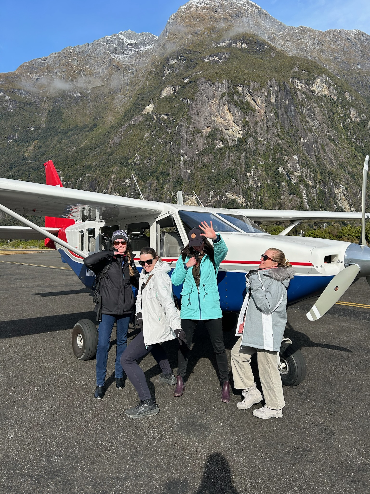
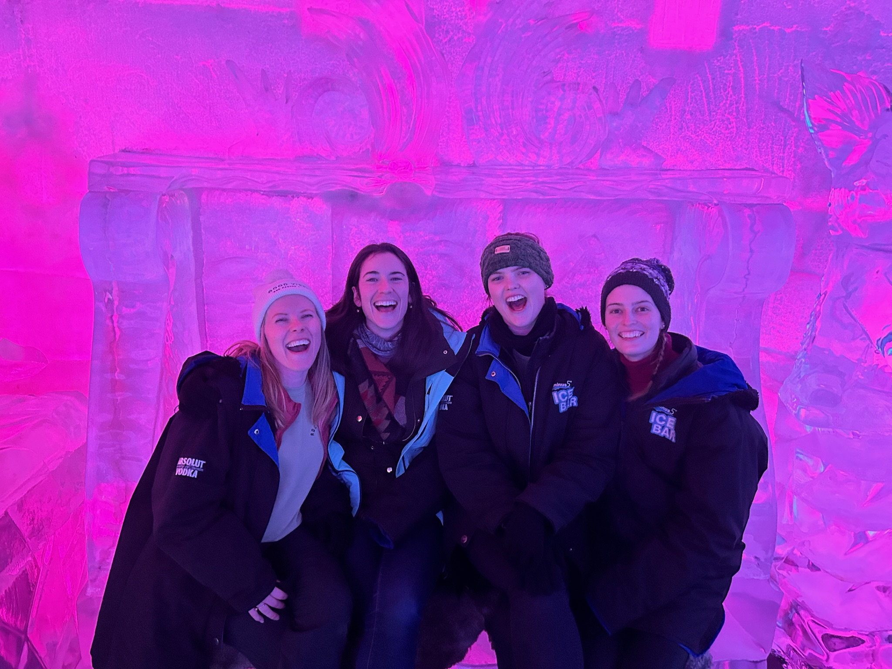
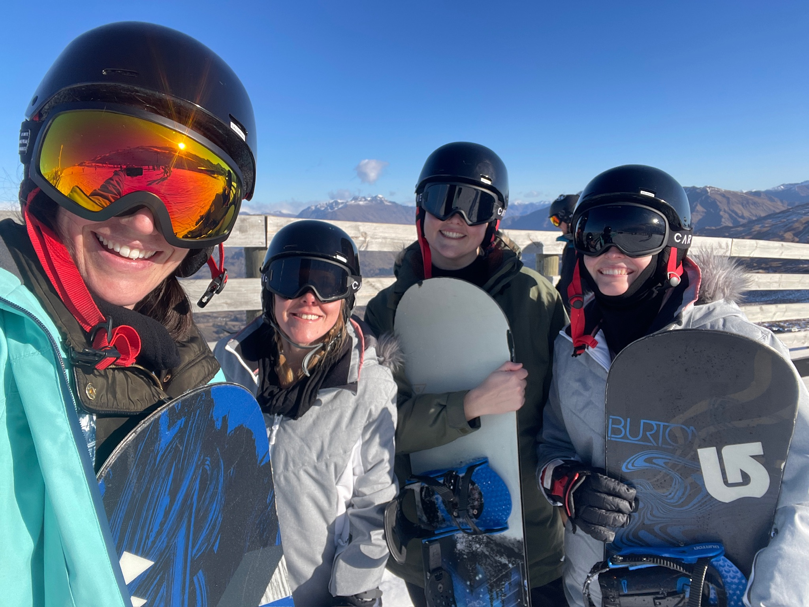
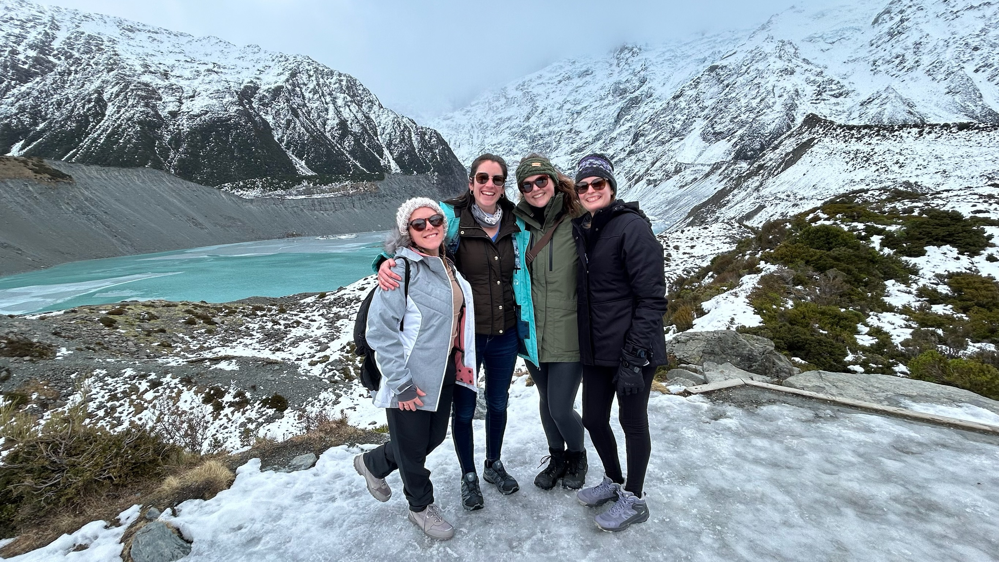
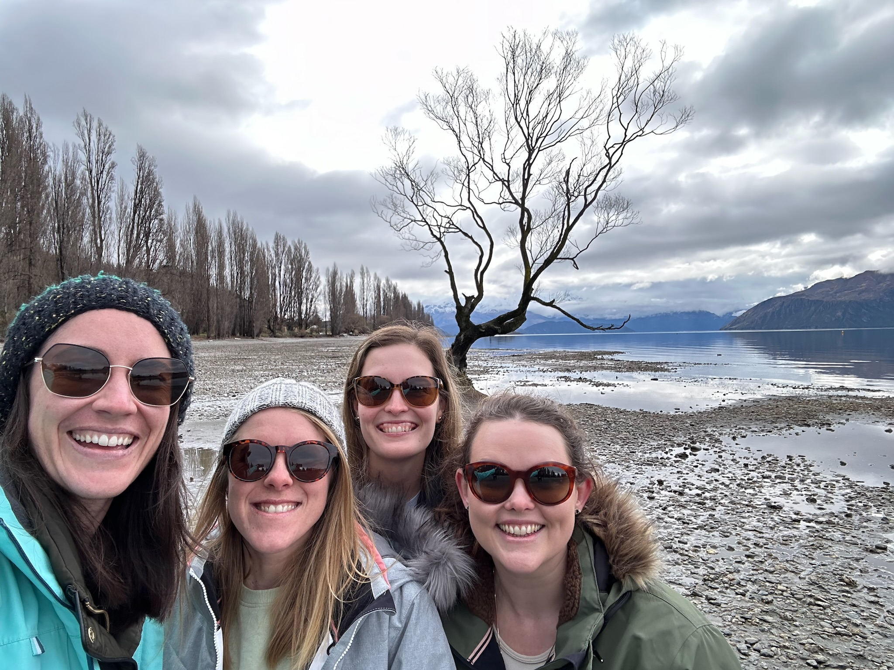
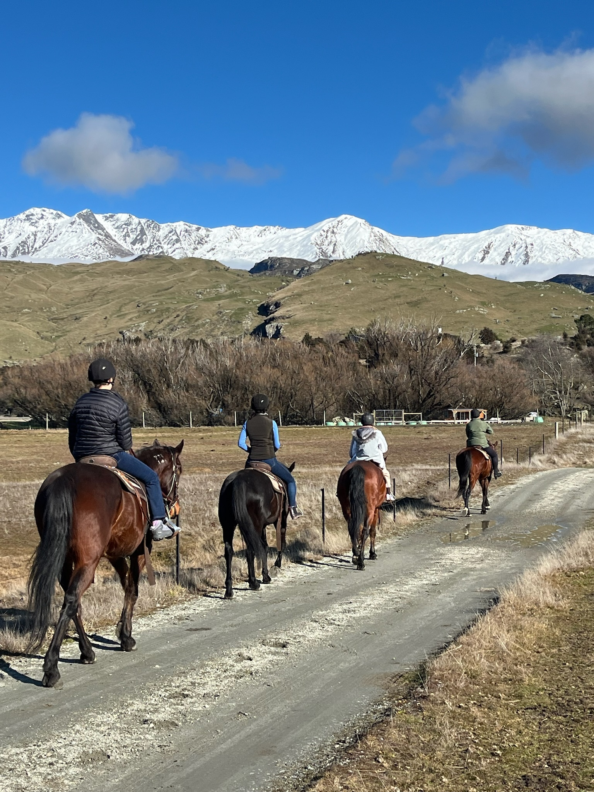

August 2024
N.B. Best to travel with buddies who love taking pictures, to capture the beautiful scenery and wonderful experiences!
Queenstown
Skyline Luge: Part go cart, part toboggan. 1.6km of fast-paced fun and once is never enough!
Milford Sound scenic flight was an incredible experience.
The speectacular views, our entheusiastic pilot with lots of fun facts and then the cruise on the water, with a fun captain were all fantastic.
Shotover jet, the ultimate jet boat experience! Hang on tight for the 360 degree spin.
Queenstown's Antarctic Experience at Minus 5 Ice Bar. Just dance it out to keep warm!
Learnt to snowboard at the Coronet Peak slopes. No pain, no gain.
Onsen Hot Pools to recover from three days of falling.
Accommodation: Melbourne Lodge, Queenstown
Lake Tekapo
The perfect location for star gazing! We were there at the time of the new moon and there were so many stars to admire. The galaxy wasn't holding out either.
Lake Tekapo Springs In the colder climate, such an experience to be outside in hot pools admiring the sunset.
Mount Cook National Park
Hoooker Valley Track
- Distance: 10 km return
- Duration: 2 – 3 hour return.
- Elevation Gain: 100 m
The relatively flat hike is easy to follow and very well maintained. Three picturesque suspension bridges to break things up, until entering the Hooker Glacial Lake showcasing the power of New Zealand's tallest mountain, Mount Cook. The track was icy so the prepared hikers had ice snow grips on their shoes.
Wānaka
That Wānaka Tree, the lonely willow, normally situated out in the waters of the lake, but it was very low tide so we were able to walk right up to it.
Wānaka Horse Trekking: Following a historical pack trail, tracing the footsteps of miners and prospectors back in the days of the gold rush. The trail runs alongside the lake with spectacular views all round. Walking along most of the time, taking in the incredibile landscape, but we did get to canter up the slopes which was so freeing and so much fun.
I loved that the owner, Sam, descibed each horse right off the bat to decide which steed would suit whom the best. I was with Harry who sometimes needed a bit of a nudge, but once he got going, he found his stride!
We swung by Arrowtown briefly, just for a little snoop of the historic gold mining town and purchasing some goodies.
Accommodation: Hāwea Hotel such a tranquil environment seated by Lake Hāwea, just a 20 minute drive out of the town. Some rolling hills, a connected walking track, and a relaxing atmosphere.
« Previous Next »